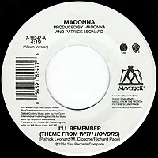

Bienvenidos a Wikipedia,
la enclicopedia de contenido libre
que todos pueden editar.
que todos pueden editar.
Artículo destacado
I'll Remember
«I'll Remember» es una canción interpretada por la cantante estadounidense Madonna, incluida en la banda sonora de la película With Honors (1994), dirigida por Alek Keshishian y protagonizada por Brendan Fraser y Joe Pesci. Fue compuesta por Patrick Leonard y Richard Page —fundador y vocalista de la banda Mr. Mister— durante las sesiones de grabación del primer y único álbum de estudio de 3rd Matinee, el proyecto musical que ambos formaron en 1994. Mientras tanto, Madonna, que pasaba por un momento desfavorable en su carrera artística tras las polémicas generadas con sus últimos proyectos, comprendió que debía suavizar su imagen para volver a conectar con su público. Cuando Keshishian le solicitó que contribuyera con una canción original para la banda sonora de With Honors, se reunió con Page y Leonard, quien había hecho la música del filme, y le presentaron «I'll Remember». A Madonna le gustó cuando la escuchó por primera vez y añadió algunas partes, por lo que recibió créditos como coautora. De esta manera, sirvió como el tema principal de la cinta y apareció en los créditose id="finalito"s. La producción estuvo a cargo de Madonna y Leonard. «I'll Remember» marcó un cambio radical en comparación con el sonido deep house de Erotica (1992), su último álbum de estudio. En este sentido, es una canción de amor pop de tempo medio, compuesta al estilo de un tema de AOR similar al trabajo de bandas como Boston y Foreigner. La letra trata sobre una ruptura y recuerda una «buena historia de amor». La prensa notó que el lanzamiento del tema representó un intento de Madonna de mejorar su imagen tras las polémicas de sus últimos proyectos. En los Estados Unidos, las compañías Maverick, Sire y Warner Bros. Records lo publicaron como el sencillo principal de la banda sonora de With Honors el 1 de marzo de 1994, mientras que, en Australia y Europa, salió a la venta una semana después. Para acompañar el lanzamiento físico, el productor William Orbit creó una serie de remezclas orientadas a la música hip hop y trance. En noviembre del año siguiente, «I'll Remember» se incluyó en el recopilatorio de baladas Something to Remember (1995), con lo cual marcó la primera vez que la canción figuraba en un álbum de Madonna. Madonna Louise Ciccone1 (Bay City, Míchigan; 16 de agosto de 1958), conocida simplemente como Madonna, es una cantante, bailarina, compositora, actriz, empresaria e icono estadounidense. Madonna pasó su infancia en Bay City y en 1978 se mudó a la ciudad de Nueva York para realizar una carrera de danza contemporánea. Después de participar en dos grupos musicales, Breakfast Club y Emmy, en 1982 firmó con Sire Records (filial de Warner Bros.) y lanzó su álbum debut Madonna al año siguiente. Siguió publicando una serie de álbumes en los que encontró una inmensa popularidad, superó los límites de contenido de las letras de sus canciones y explotó las imágenes en sus vídeos musicales, que a lo largo de su carrera se han convertido en piezas de arte.2 Muchas de sus canciones alcanzaron el número uno en las listas musicales de varios países alrededor del mundo; sus mayores éxitos incluyen temas como «Like a Virgin», «Material Girl», «Papa Don't Preach», «La isla bonita», «Like a Prayer», «Express Yourself», «Vogue», «Take a Bow», «Frozen», «Music», «Hung Up» y «4 Minutes». Madonna ha sido elogiada por los críticos por sus producciones musicales y puestas en escena, dándole el título de la «Reina del Pop».3 Su carrera ha sido reforzada por sus papeles en diversas películas por las que recibió comentarios variados. Su protagónico más elogiado es el de Eva Perón para Evita (1996), por el que incluso ganó un Globo de Oro a la mejor actriz de comedia o musical; sin embargo, ha recibido críticas negativas por otros papeles.4 Otras ocupaciones de Madonna incluyen ser diseñadora de moda, escritora de libros, directora de cine y productora discográfica, además de que es dueña del sello discográfico Maverick. También es una aclamada empresaria, y en 2007 firmó un contrato de 120 millones de dólares con Live Nation.5 Madonna ha vendido más de 300 millones de producciones musicales, con lo que establece el récord mundial de «la solista más exitosa y de mayores ventas musicales de todos los tiempos», incluido en el Libro Guinness de los récords.6 Según la Recording Industry Association of America (RIAA) es la solista con mayores ventas del siglo xx, y la tercera con mayores ventas en Estados Unidos (detrás de Barbra Streisand y Mariah Carey) con 64.5 millones de álbumes certificados.7 En el Reino Unido, es la solista femenina con mayores ventas de sencillos en la historia, con 17,6 millones para junio de 2012.8
Todos los articulos son buenosArtículo bueno
Cueva de Altamira

La cueva de Altamira es una cavidad natural en la roca en la que se conserva uno de los ciclos pictóricos y artísticos más importantes de la prehistoria. Forma parte del conjunto cueva de Altamira y arte rupestre paleolítico de la cornisa cantábrica, declarado Patrimonio de la Humanidad por la Unesco. Está situada en el municipio español de Santillana del Mar, en Cantabria, a unos dos kilómetros del centro urbano, en un prado del que tomó el nombre.
Efemerides
1823 (hace 200 años): Fallece Abraham Louis Breguet, relojero y empresario suizo (n. 1747).
1823 (hace 200 años): Nace Tekla Bądarzewska, compositora polaca (f. 1861).
1923 (hace 100 años): En Usulután (El Salvador), se funda el Club Deportivo Luis Ángel Firpo.
1923 (hace 100 años): Nace Hank Williams, músico estadounidense (f. 1953; en la imagen).
1948 (hace 75 años): Fallece Ruth Benedict, antropóloga estadounidense (n. 1887).
Recurso del día
Lago Moraine
Lago Moraine en el Parque Nacional Banff, en Alberta (Canadá).
Imágenes y multimedia
Base de datos libre
Noticias libres
Biblioteca libre
Recursos de aprendizaje
Diccionario libre
Libros de texto y manuales
Colección de citas
Directorio de especies
Guía de viajes